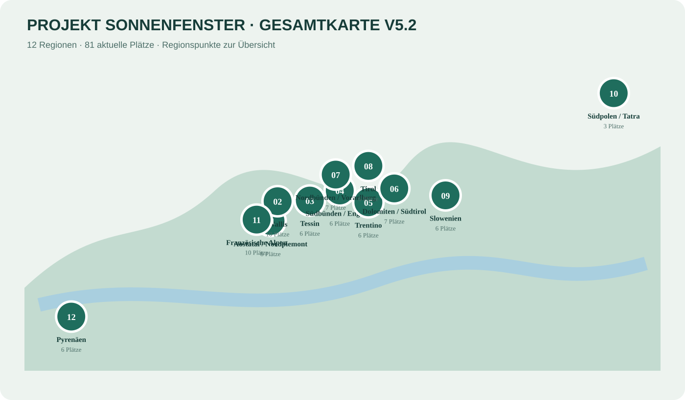
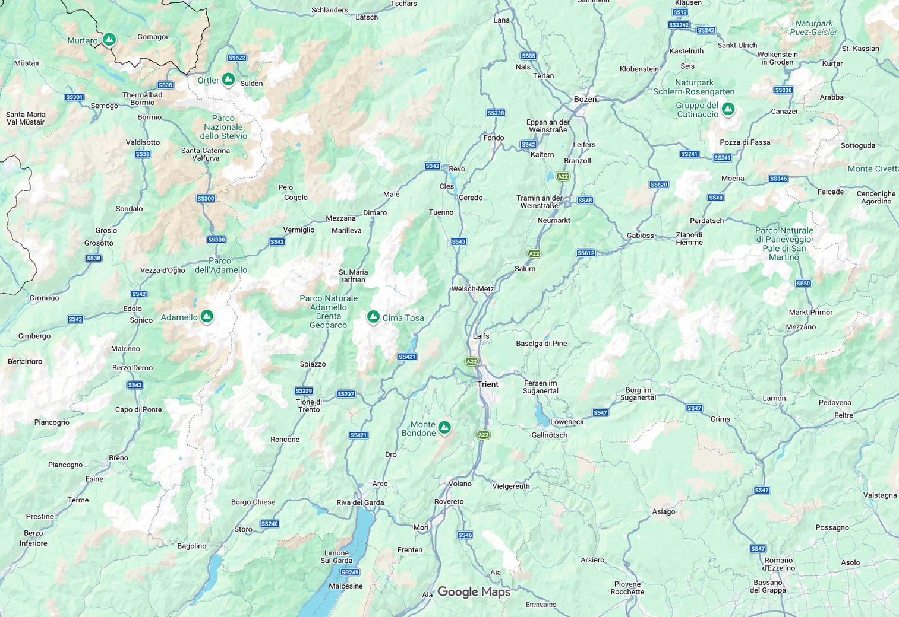

Wo ist unser nächstes Sonnenfenster?
81 geprüfte Plätze in 12 Regionen. Erst Wetter und Region, danach Camping, Sunny-Logik, Touren und Besonderheiten vergleichen.
81Plätze12 Regionen
🗺 Gesamtkarte
Alle Regionen auf einen Blick – danach Regionalkarte mit den einzelnen Plätzen öffnen.

Frühere Projekt-Gesamtkarte anzeigen

Regionen
Regionalkarte
Alle Plätze
Keine passenden Plätze gefunden.